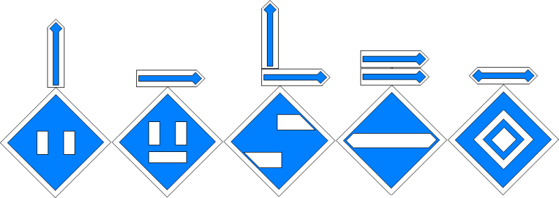
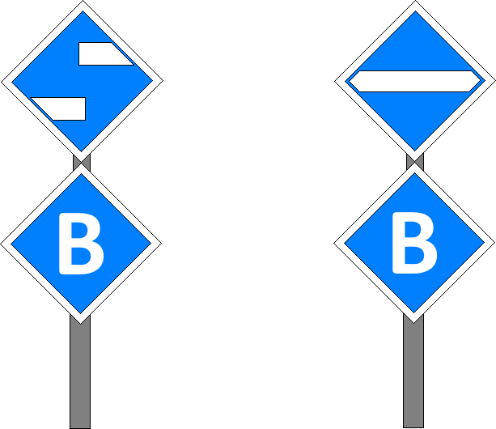
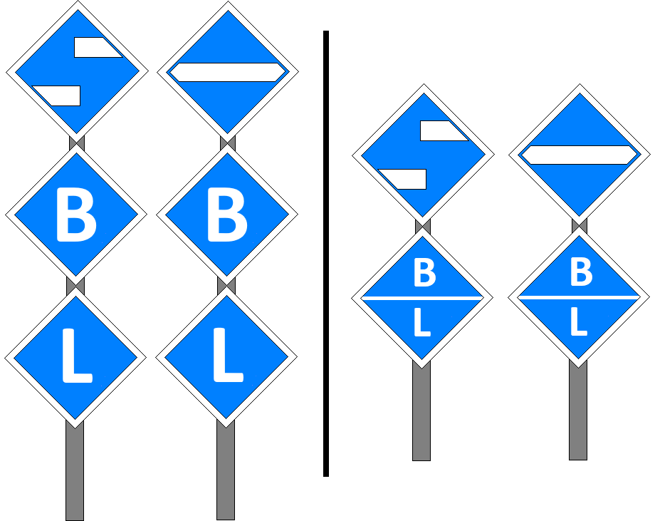

Signalbuch-Online
Fahrleitungssignale (El)
Übersicht und Erklärungen zu den Fahrleitungssignalen im Bahnbetrieb.
Allgemeines
(1) Zweck
Die Fahrleitungssignale kennzeichnen Fahrleitungsschutzstrecken, Fahrleitungsuntersuchungen, gestörte Fahrleitungs-Abschnitte und das Ende der Fahrleitung. Die Fahrleitungssignale kennzeichnen auch ausgeschaltete Fahrleitungs-Abschnitte.
(2) Aussehen
Die Fahrleitungssignale bestehen aus einer auf der Spitze stehenden, weiß und schwarz umrandeten blauen quadratischen Tafel mit weißem Signalzeichen.
(3) Geltung
Die Fahrleitungssignale gelten für den elektrischen Betrieb mit Oberleitung oder Stromschiene.
(4) El-Signale an Gleisverzweigungen
Wenn bei einer Gleisverzweigung bei den Signalen El 1v, El 1, El 3, El 4 und El 6 angezeigt werden soll, für welche Fahrtrichtung das Signal gilt, so wird dies durch einen Pfeil über dem Signal angezeigt.
Ein Pfeil senkrecht nach oben zeigt an, dass das Signal für den geraden Zweig oder bei Krümmungen für den schwächer gekrümmten Zweig der Weiche gilt.
Liegen mehrere Verzweigungen kurz hintereinander und sind mehrere Gleise betroffen, so sind erforderlichenfalls zwei Pfeile über dem Signal vorhanden.
Für einen am Signal El 3 angebrachten Richtungspfeil ist die Fahrtrichtung in der La angegeben.
Am Signal El 4 ist der am El 3 angebrachte Richtungspfeil zu wiederholen, wenn auch das El 4 vor der Gleisverzweigung steht.
Ein Pfeil senkrecht nach oben zeigt an, dass das Signal für den geraden Zweig oder bei Krümmungen für den schwächer gekrümmten Zweig der Weiche gilt.
Liegen mehrere Verzweigungen kurz hintereinander und sind mehrere Gleise betroffen, so sind erforderlichenfalls zwei Pfeile über dem Signal vorhanden.
Für einen am Signal El 3 angebrachten Richtungspfeil ist die Fahrtrichtung in der La angegeben.
Am Signal El 4 ist der am El 3 angebrachte Richtungspfeil zu wiederholen, wenn auch das El 4 vor der Gleisverzweigung steht.

Signale El 1v, El 1 und El 2
(1)
Die Signale sind ortsfest.
(2) veränderbare Signale
Wo Fahrleitungs-Schutzstrecken nur zeitweilig das Ausschalten der Triebfahrzeuge erfordern, ist für die Einfahrt in die Fahrleitungs-Schutzstrecke ein veränderliches Aus- und Einschaltsignal (El 1/El 2) vorhanden.
(3) Beleuchtung
Signale an Fahrleitungs-Schutzstrecken sind bei Dunkelheit beleuchtet; das Signal El 1v ist beleuchtet oder rückstrahlend.
Bei einfachen Verhältnissen kann auf die Beleuchtung der Signale verzichtet werden.
Bei einfachen Verhältnissen kann auf die Beleuchtung der Signale verzichtet werden.
Signale El 3, El 4 und El 5
(1)
Die Signale können auch nicht ortsfest sein.
(2) örtliche Zusätze
Gelten die Signale für bestimmte Gleise oder Fahrtrichtungen nicht, ist dies in den örtlichen Zusätzen bekannt gegeben.
(3) Beleuchtung
Die Signale sind bei Dunkelheit beleuchtet; bei einfachen Verhältnissen kann darauf verzichtet werden.
(4)
Außerhalb der DB AG kann das Signal El 4 auf der Rückseite das Signal El 5 zeigen.
(5) Richtungsangabe
Die Signale El 3 und El 4 können mit einer Zusatztafel ergänzt sein, auf der ein weißer Kennbuchstabe gezeigt wird.
Durch den Kennbuchstaben wird angegeben, für welche Fahrtrichtung die Signale El 3 oder El 4 gelten.
Der Infrastrukturunternehmer gibt die verwendeten Kennbuchstaben bekannt.
Die verwendeten Kennbuchstaben sind in den örtlichen Zusätzen enthalten.
Durch den Kennbuchstaben wird angegeben, für welche Fahrtrichtung die Signale El 3 oder El 4 gelten.
Der Infrastrukturunternehmer gibt die verwendeten Kennbuchstaben bekannt.
Die verwendeten Kennbuchstaben sind in den örtlichen Zusätzen enthalten.

(6) Mehrere Fahrtrichtungen
Sind die Signale El 3 und El 4 für mehrere Fahrtrichtungen zu beachten, können:
- die Signale El 3 und El 4 mit zwei Zusatztafeln ergänzt sein.
- diese zwei Zusatztafeln ein Drittel kleiner als die Signaltafel sein.
- die Kennbuchstaben in einer Zusatztafel übereinander gezeigt werden.
- die Signale El 3 und El 4 mit zwei Zusatztafeln ergänzt sein.
- diese zwei Zusatztafeln ein Drittel kleiner als die Signaltafel sein.
- die Kennbuchstaben in einer Zusatztafel übereinander gezeigt werden.
